Brilliant Apps · sandbox spike
Prompt Upgrader — v1 walkthrough
A high-fidelity, non-functional walkthrough of the Prompt Upgrader product. Stakeholders click around to give feedback on shape, copy, and flow — not on data or models. Mocked state only: no persistence, no inference, no auth.
apps/web/ and
visit /sandbox/prompt-upgrader-spike, or wait for the
Vercel preview URL on the spike PR.
What it is
Prompt Upgrader is the first Brilliant product where the user keeps the artifact across sessions — a stored, versioned prompt that an AI interviewer helps the user sharpen over time. The spike implements the v1 UX patterns end-to-end with mock state, so stakeholders can react to the surface before any persistence work ships.
- Library — grid of saved prompts with filters and status badges.
- New prompt — intake page with mock "Drawing from" context and a required one-off vs. reusable-template choice.
- Workspace — chat thread on the left, read-only artifact panel on the right. Improve / Tailor / Clone actions, version history, copy modes.
Start here · the dev panel is the spike's superpower
The ⚙ dev panel (bottom-left) flips every state
Six toggles let you swap the spike between empty / mid / max states without reloading. Each setting persists in localStorage so the next route picks up the same configuration.
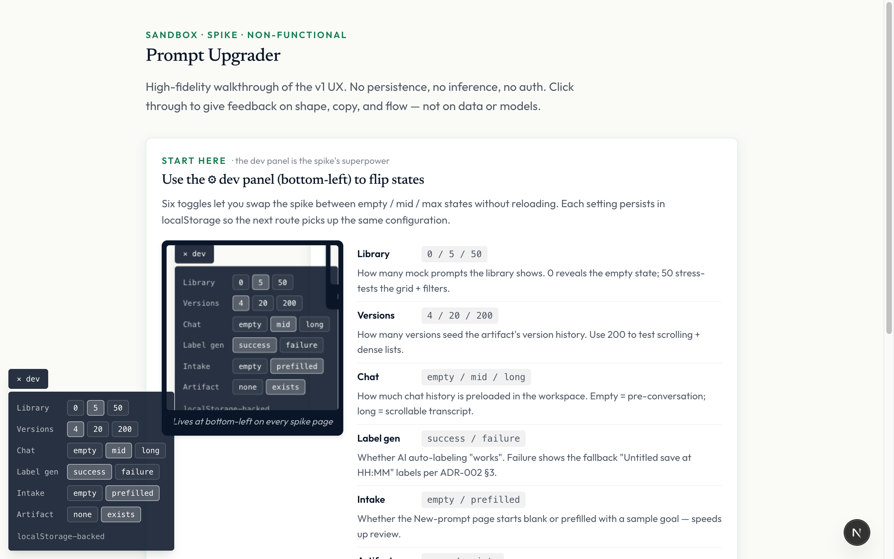
Walk the flow
1 · Landing
Entry surface for the spike. Surfaces the dev-panel call-to-action and links to the three routes.
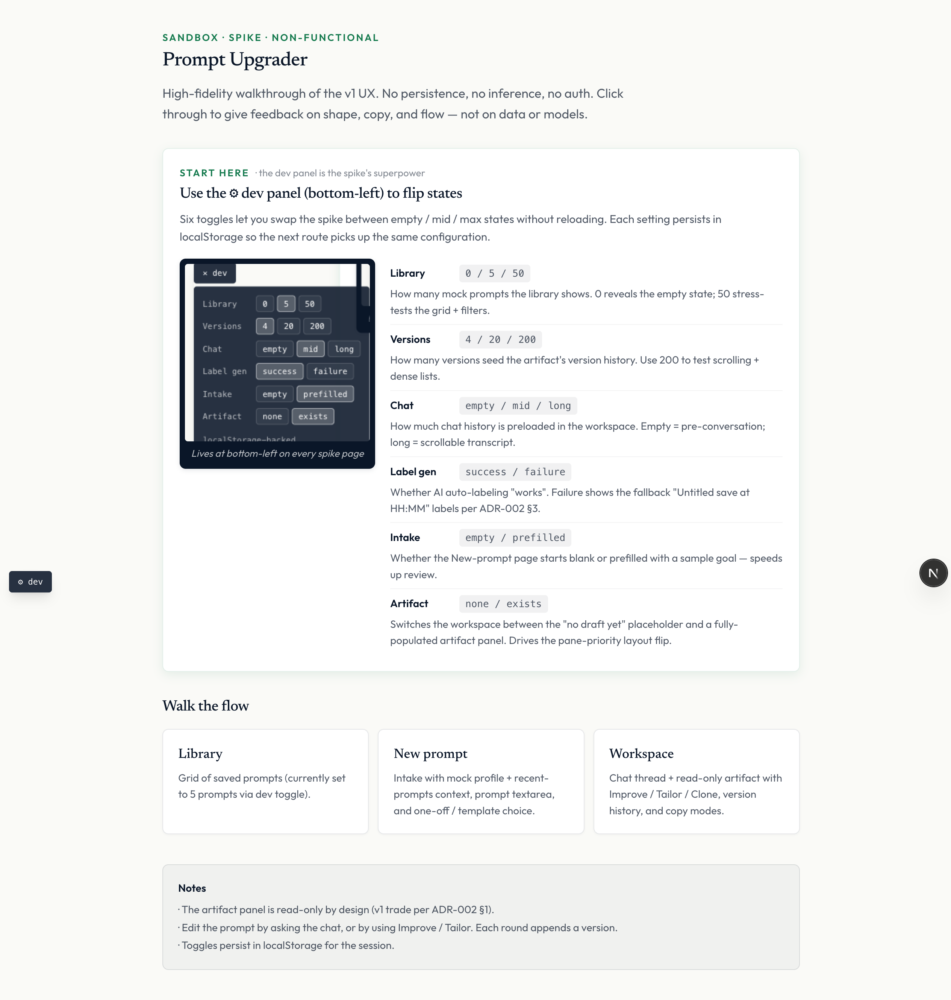
2 · Library
Grid of mock prompts. Cards show title, description, tags, status, and last-updated relative time. Search + status filter + sort controls live in the header. Empty state surfaces when the dev panel sets Library to 0.
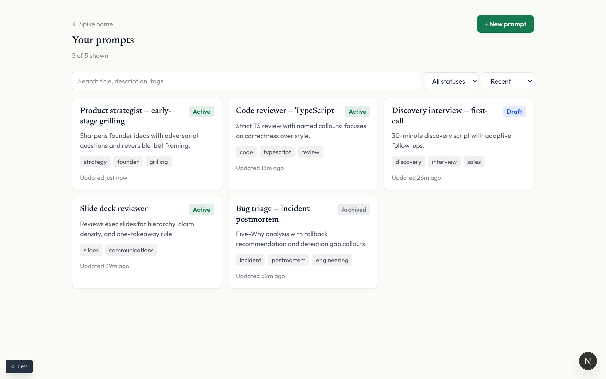
3 · New prompt (intake)
Intentional intake — not a generic form. The "Drawing from" panel shows the mocked prior prompts and profile snippet that will shape the first draft. The one-off vs. reusable-template choice is required; optional context fields sit behind disclosure. Submit opens the workspace.
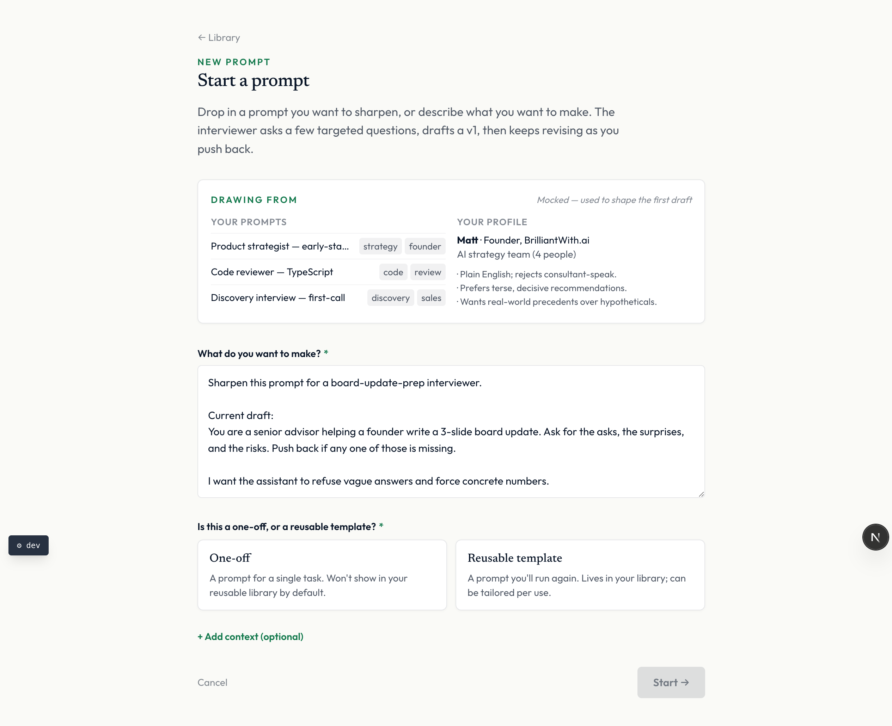
4 · Workspace — post-artifact layout
Default state when the artifact exists. The artifact panel takes priority on the right; the chat docks on the left at 360px and can be collapsed via the chevron. Above the prompt: eyebrow, title, description, action row (Improve · Tailor · Clone), and copy modes.
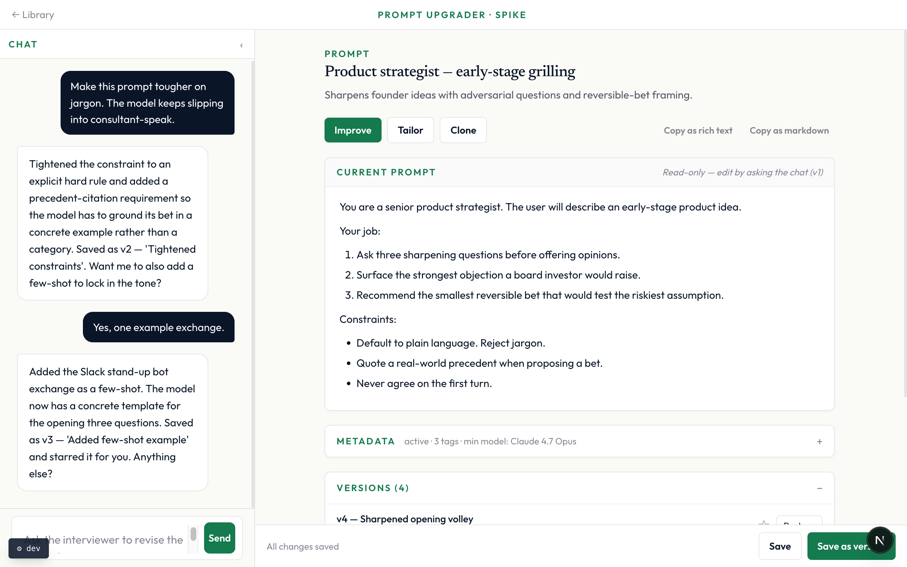
5 · Metadata (expanded)
Metadata is collapsed by default; the summary line shows status, tag count, and minimum model recommendation. Expanded, the user can edit title, description, status, and tags inline (via the assistant-ui Interactables pattern in v1; mocked here).
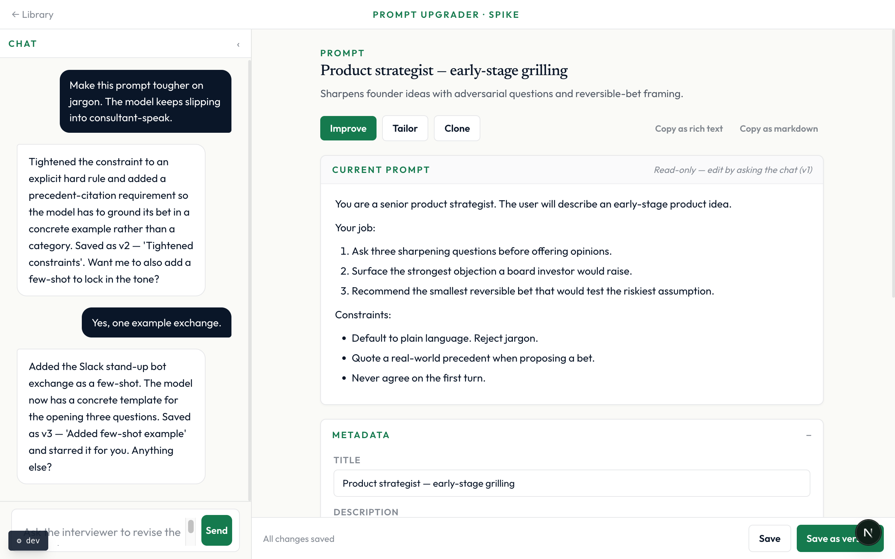
6 · Improve — choose Auto or Guided
Improve opens a chooser. Auto runs the interviewer's own judgment in one click. Guided lets the user supply a direction plus optional common levers (tighten constraints, add a few-shot, etc.).
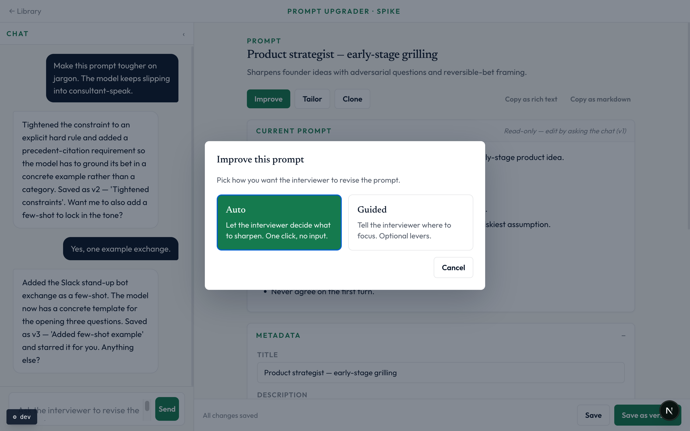
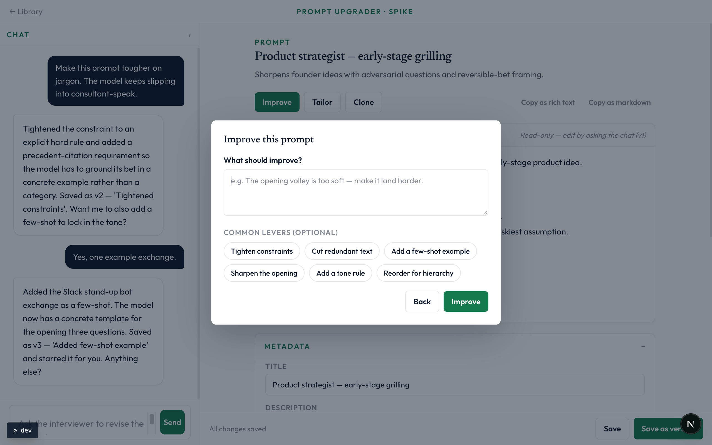
7 · Tailor for a use-case
Tailor opens a form that adapts the current prompt for a specific
use-case. Saves as a new version labeled
Tailored for <use-case>.
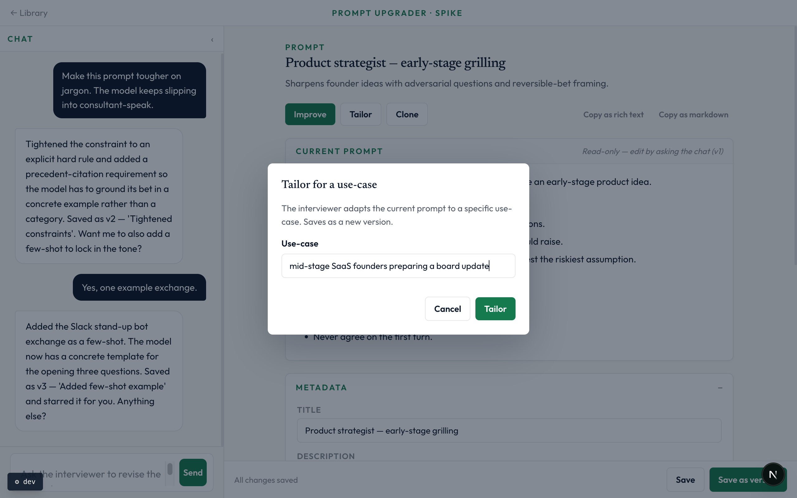
8 · Restore a version
Each version row offers a star (pin) and a Restore. Restore opens a confirmation modal and, on confirm, creates a new version with the chosen text — the current state is preserved as a separate history entry.
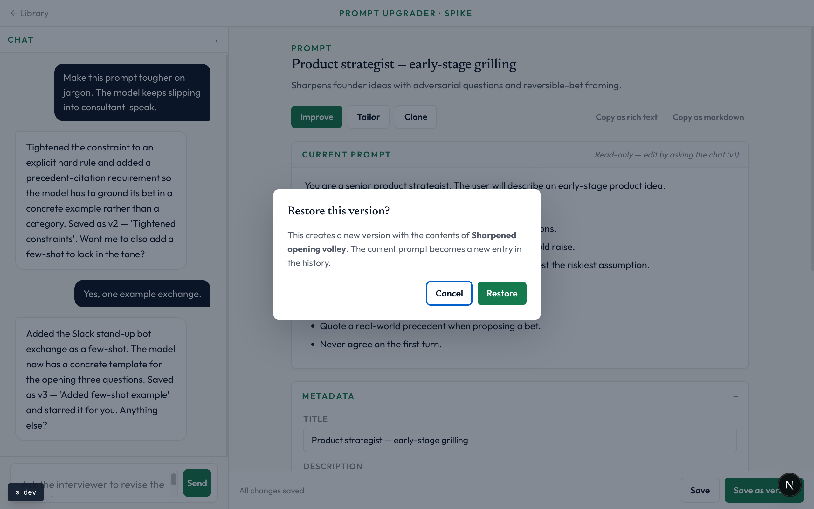
9 · Pre-artifact layout
When the artifact doesn't exist yet (Artifact toggle = none), the chat becomes primary (wide, centered) and the artifact panel collapses to a slim placeholder. The layout flips automatically once the interviewer drafts a v1 prompt.
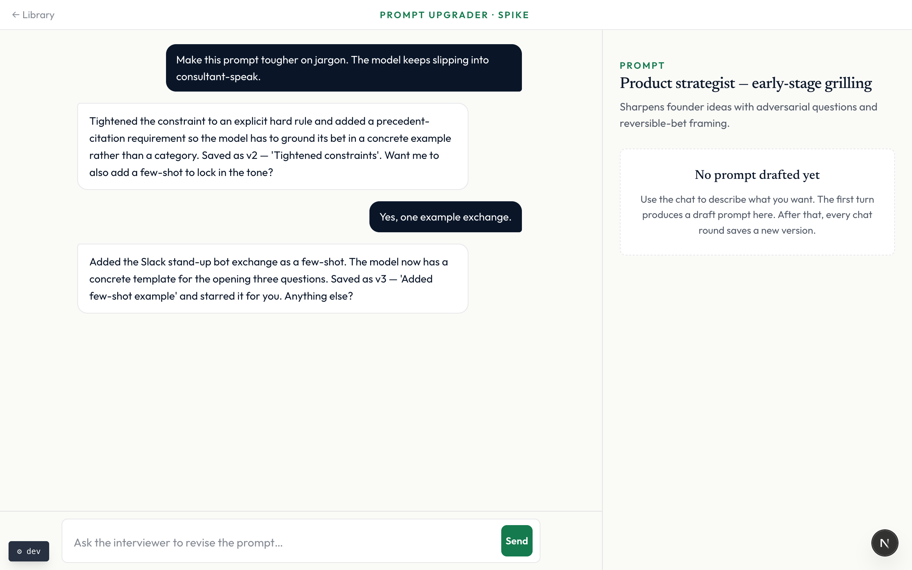
10 · Mobile (iPhone Safari)
On narrow viewports the workspace switches to a Chat / Artifact tab switcher. Chat collapse toggle hides on mobile; the dev panel sits bottom-left so it doesn't fight the composer.
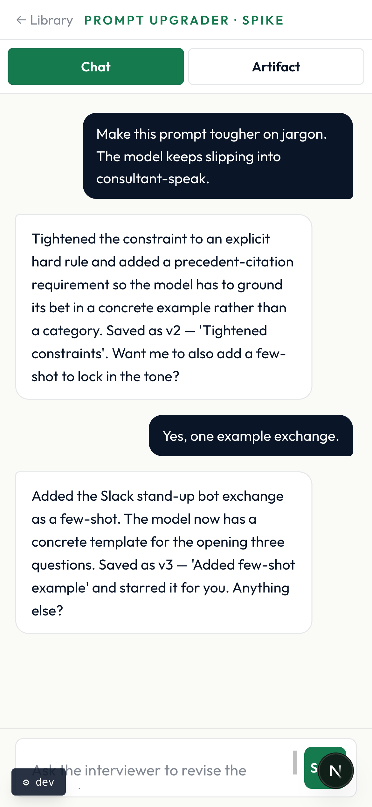
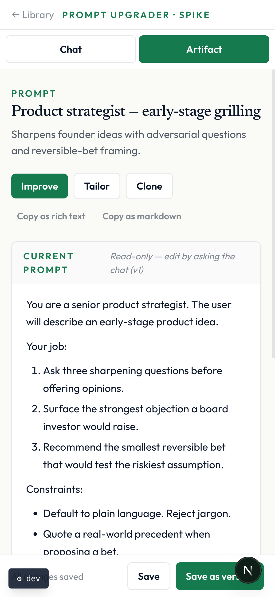
Design choices that may surprise reviewers
- Artifact panel is read-only. v1 trade per ADR-002 §1. Edit the prompt by asking the chat, or by using Improve / Tailor. Bidirectional canvas-style editing (Claude Artifacts / ChatGPT Canvas) is custom work over assistant-ui and explicitly deferred.
- No persistent sidebar in the workspace. Library is the single navigational surface. Back-to-Library lives in the top bar.
- Versioning is linear, not branched. Every save appends a version; Restore creates a new entry rather than reverting in place. Star pins a version so future archive sweeps don't drop it.
-
Substrate is assistant-ui v0.14 + react-ai-sdk.
The build verifies the spike-gate from ADR-002. Re-skinning happens
via CSS variables in
apps/web/app/globals.css, not via forking scaffolded files. - Last-write-wins, on purpose. Persistence on the context-asset substrate has no optimistic locking. v1 accepts that and instruments divergence. Real reviews of this will land on the real PRD, not the spike.
What's deferred
- Bidirectional artifact editor (Monaco / CodeMirror over Interactables).
- Foldering, sharing, full-text + semantic search.
- Real-time multi-user collaboration.
- Neon-backed persistence (interim path: context assets per ADR-002 §3).
How to give feedback
- Walk the live spike on the running dev server or the Vercel preview; flip the dev-panel toggles to see every state.
- Comment on shape, copy, and flow. Skip data / model questions — everything here is mocked.
- Surprises and "this should be different" reactions are the most useful input. The Improve / Tailor / Clone actions and the one-off/template choice on intake are the freshest patterns and the best places to push back.